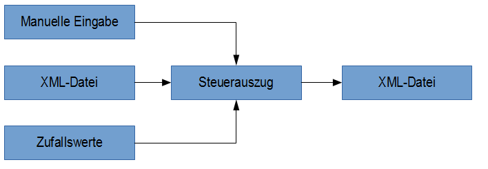
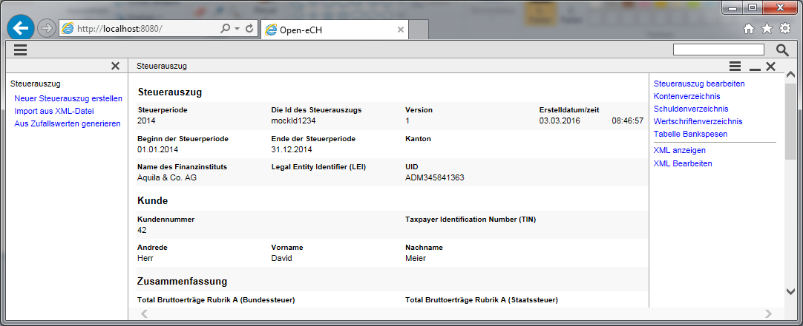

Mit dieser Applikation können Dokumente gemäss der Spezifikation eCH 0196 visualisiert, erstellt oder bearbeitet werden. Sie ist als Hilfe gedacht bei der Arbeit mit den entsprechenden XML-Dateien.
Ein Steuerauszug kann aus einem bestehenden XML-File gelesen werden oder neu über die Applikation erstellt werden. Zusätzlich kann zu Versuchszwecken ein Steuerauszug komplett aus zufälligen Daten generiert werden.

In der Grafik ist der Ablauf dargestellt. Ein Steuerauszug wird importiert oder erstellt und dann bearbeitet. Anschliessend kann wieder ein Export nach XML gemacht werden. Die Daten werden nicht dauerhaft auf dem Server gespeichert. Bei einem erneuten Aufruf der Applikation kann nicht darauf zurückgegriffen werden. Ist dies gewünscht sollten die Daten über einen XML-Export auf einen lokalen Datenträger gespeichert werden.

In der linken Seite des Browser befindet sich das Navigationsmenu. Es kann über das Kreuz in ihrer Titelleiste geschlossen werden. Über das Symbol der drei Linien oben links kann es bei Bedarf wieder angezeigt werden. Dieses Menu stellt den Einstiegspunkt für eine neue Bearbeitung dar. Die aktuelle Anzeige auf der linken Seite wird dabei komplett ausgetauscht. Das Menu kann jederzeit benutzt werden ausser es ist gerade ein Dialog geöffnet.
Wie gewohnt kann mit den Vor- und Zurück Knöpfen des Browser im Verlauf geblättert werden.
Die Hauptsicht in der Mitte kann weitere Details zur Verfügung stellen. Diese sind über das Kontextmenu erreichbar. Das Kontextmenu kann auf zwei Arten angezeigt werden. In der Titelleiste der Sicht können die drei Linien angeklickt werden. Dann werden die Möglichkeiten der aktuellen Sicht rechts angezeigt. Zweitens kann diese Anzeige auch über die rechte Maustaste ein- und ausgeblendet werden. Sind mehrere Details gleichzeitig untereinander angezeigt wird durch die rechte Maustaste jeweils das Kontextmenu gesteuert in dem sich der Mauszeiger gerade befindet.